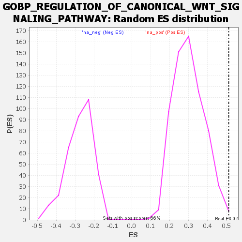

Profile of the Running ES Score & Positions of GeneSet Members on the Rank Ordered List
| Dataset | rank |
| Phenotype | NoPhenotypeAvailable |
| Upregulated in class | na_pos |
| GeneSet | GOBP_REGULATION_OF_CANONICAL_WNT_SIGNALING_PATHWAY |
| Enrichment Score (ES) | 0.51242745 |
| Normalized Enrichment Score (NES) | 1.6885388 |
| Nominal p-value | 0.00304414 |
| FDR q-value | 0.43700388 |
| FWER p-Value | 0.999 |
| SYMBOL | RANK IN GENE LIST | RANK METRIC SCORE | RUNNING ES | CORE ENRICHMENT | |
|---|---|---|---|---|---|
| 1 | BTRC | 20 | 105.817 | 0.1083 | Yes |
| 2 | KPNA1 | 111 | 45.750 | 0.1180 | Yes |
| 3 | SBNO1 | 133 | 42.598 | 0.1557 | Yes |
| 4 | TMEM9 | 139 | 41.253 | 0.1992 | Yes |
| 5 | CCDC88C | 165 | 38.739 | 0.2307 | Yes |
| 6 | KREMEN1 | 184 | 37.001 | 0.2636 | Yes |
| 7 | LRRK1 | 198 | 34.835 | 0.2963 | Yes |
| 8 | TMEM170B | 203 | 34.261 | 0.3325 | Yes |
| 9 | FOXO3 | 229 | 32.387 | 0.3570 | Yes |
| 10 | DDX3X | 250 | 30.443 | 0.3817 | Yes |
| 11 | LZTS2 | 279 | 28.682 | 0.4007 | Yes |
| 12 | LIMD1 | 309 | 26.528 | 0.4169 | Yes |
| 13 | SRC | 349 | 23.916 | 0.4257 | Yes |
| 14 | TRPM4 | 353 | 23.845 | 0.4507 | Yes |
| 15 | RBPJ | 405 | 21.474 | 0.4513 | Yes |
| 16 | TGFB1 | 420 | 20.842 | 0.4680 | Yes |
| 17 | WNK2 | 423 | 20.784 | 0.4902 | Yes |
| 18 | TLE2 | 461 | 19.262 | 0.4947 | Yes |
| 19 | CDK14 | 487 | 18.566 | 0.5039 | Yes |
| 20 | DAB2IP | 512 | 17.582 | 0.5124 | Yes |
| 21 | APC2 | 687 | 13.145 | 0.4476 | No |
| 22 | PTK7 | 716 | 12.417 | 0.4486 | No |
| 23 | TMEM198 | 720 | 12.373 | 0.4610 | No |
| 24 | AXIN2 | 798 | 10.901 | 0.4380 | No |
| 25 | EDA | 1115 | 6.497 | 0.3010 | No |
| 26 | ADGRA2 | 1149 | 6.060 | 0.2927 | No |
| 27 | WNT11 | 1159 | 5.925 | 0.2951 | No |
| 28 | WNT5B | 1230 | 5.268 | 0.2691 | No |
| 29 | SULF2 | 1255 | 5.067 | 0.2637 | No |
| 30 | FGFR2 | 1288 | 4.747 | 0.2544 | No |
| 31 | NOTCH1 | 1298 | 4.673 | 0.2555 | No |
| 32 | WNT5A | 1378 | 3.995 | 0.2239 | No |
| 33 | LGR5 | 1410 | -4.329 | 0.2145 | No |
| 34 | BICC1 | 1419 | -4.411 | 0.2158 | No |
| 35 | EGR1 | 1445 | -4.738 | 0.2096 | No |
| 36 | SCEL | 1491 | -5.477 | 0.1952 | No |
| 37 | CAV1 | 1636 | -8.577 | 0.1390 | No |
| 38 | NOG | 1657 | -9.334 | 0.1402 | No |
| 39 | GNAQ | 1661 | -9.601 | 0.1495 | No |
| 40 | CCNYL1 | 1868 | -18.516 | 0.0761 | No |
| 41 | DKK1 | 2081 | -33.689 | 0.0167 | No |
| 42 | ADNP | 2168 | -47.000 | 0.0297 | No |
